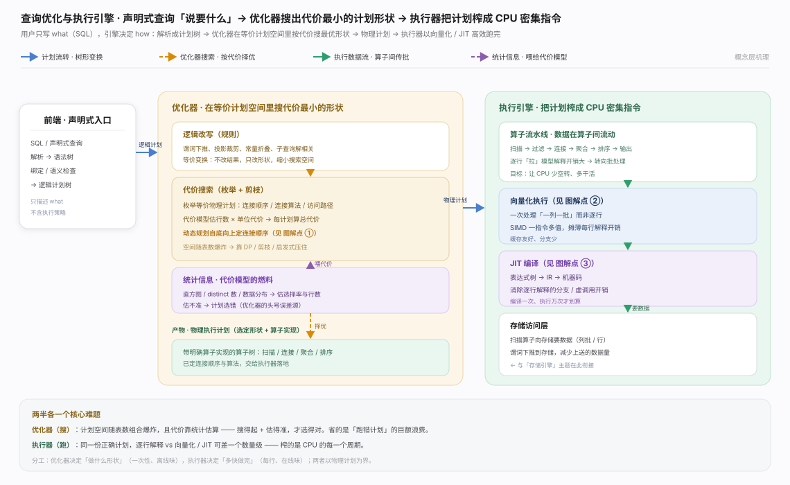
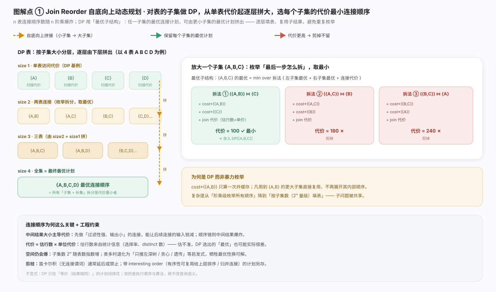
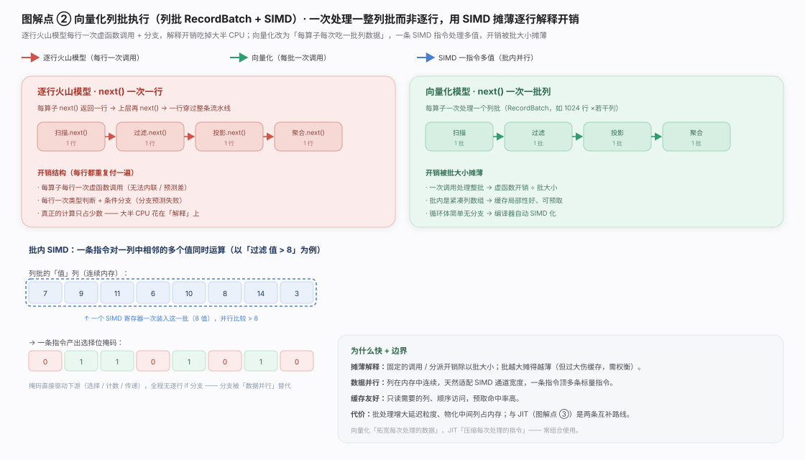
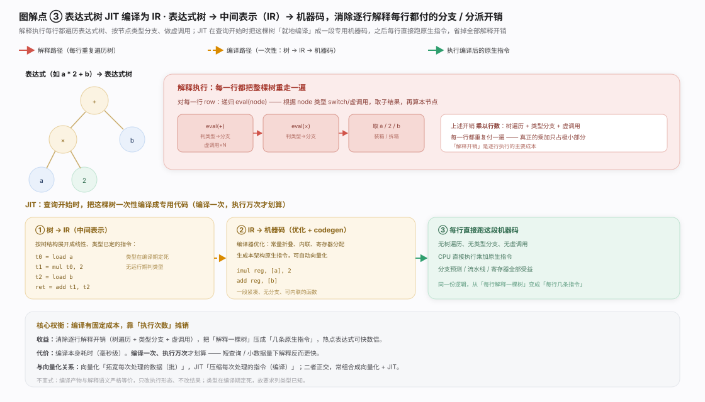
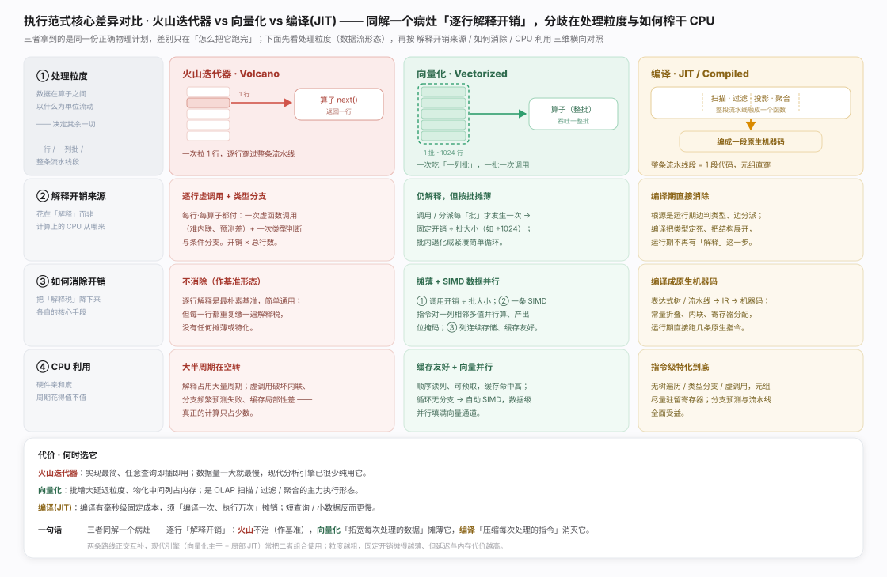
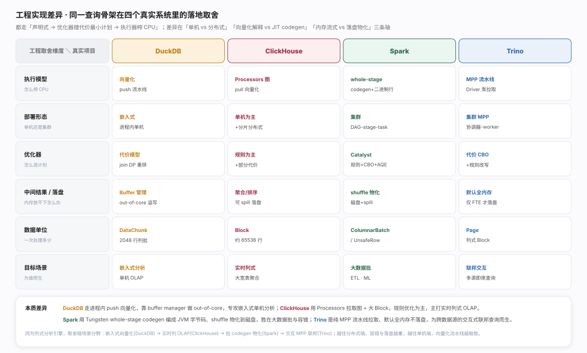

查询引擎要跨越一道鸿沟：用户写的是声明式的 what,机器要的是过程式的 how。优化器决定『做什么形状』,执行器决定『多快做完』,以一棵物理执行计划为界——前半是搜索问题（省「跑错计划」的巨额浪费),后半是效率问题（省「每行解释」的开销)。分工见生态图。

连接顺序优化：n 表连接顺序数阶乘级爆炸,靠最优子结构（表集合最优计划由子集最优计划拼出)自底向上填表、每子集最优代价只算一次并缓存,把阶乘压到 2ⁿ 量级。代价 = 估行数 × 单位代价,故「最优」准不准取决于统计准不准;表太多时退化为左深树／贪心启发式。见图。

向量化：治火山模型「逐行付虚调用与类型分支、大半 CPU 花在解释」之弊,把粒度从「一行」拓宽到「一列批」（如 1024 行),固定调用开销被批大小摊薄,紧凑列数组带来缓存友好与自动 SIMD（一条指令对一列多值并行、产出选择位掩码,全程无逐行 if)。代价是批增大延迟粒度、物化中间列占内存。见图。

JIT：向量化拓宽每次处理的数据,JIT 则压缩每次处理的指令。逐行解释表达式（如 a*2+b)每行都重走表达式树（递归 eval + 分支／虚调用);JIT 在查询开始时把这棵「对每行都一样」的树 树 → IR → 机器码 一次性编译成专用指令,之后每行直跑无遍历。核心权衡：编译有固定成本、靠执行次数摊销;与向量化正交,常组合。见图。

火山迭代器、向量化、编译(JIT) 拿到同一份正确物理计划,同治一个病灶——逐行「解释开销」,分歧只在处理粒度：一次一行／一次一列批／整条流水线段融成一段代码。火山不治此病（最简但每行都缴解释税、数据一大最慢);向量化拓宽数据（调用开销 ÷ 批 + SIMD + 缓存友好);编译压缩指令（类型定死、展开成原生机器码从根消除解释)。一句话总纲：向量化是 OLAP 主力、编译须「编译一次执行万次」摊销,二者正交常组合。见图。

四个引擎共享「声明式 → 优化器搜代价最小计划 → 执行器榨 CPU」同一骨架,分野在三条轴上。DuckDB 进程内嵌、push-based 向量化流水线（DataChunk 2048 行),buffer manager 做 out-of-core,专攻单机分析。ClickHouse 用 Processors 拉取执行图 + 大 Block（约 6.5 万行)、规则为主,主打实时列式 OLAP。Spark 用 Catalyst（规则 + CBO + AQE)选计划、Tungsten whole-stage codegen 编成 JVM 字节码、shuffle 物化到磁盘换容错,胜在大数据批与 ETL／ML。Trino 是纯 MPP：Page 在内存流水线跨 worker 交换、默认全内存不落盘（仅 FTE 才 spool),为跨源交互式联邦查询而生。分水岭：越往分布式端容错与落盘物化越重（Spark／Trino),越往单机端向量化流水线越极致（DuckDB／ClickHouse);codegen（Spark)与解释式向量化（其余)则是「编译消虚调用」与「按批摊薄解释」两条榨 CPU 路线。
实现细节取自库内已源码核实的项目页与下列权威论文（各项目官方发表）：DuckDB（SIGMOD 2019） · ClickHouse（VLDB 2024） · Spark SQL（SIGMOD 2015） · Presto/Trino: SQL on Everything（ICDE 2019）
实现细节取自库内已源码核实的项目页与下列权威论文（各项目官方发表）：DuckDB（SIGMOD 2019） · ClickHouse（VLDB 2024） · Spark SQL（SIGMOD 2015） · Presto/Trino: SQL on Everything（ICDE 2019）